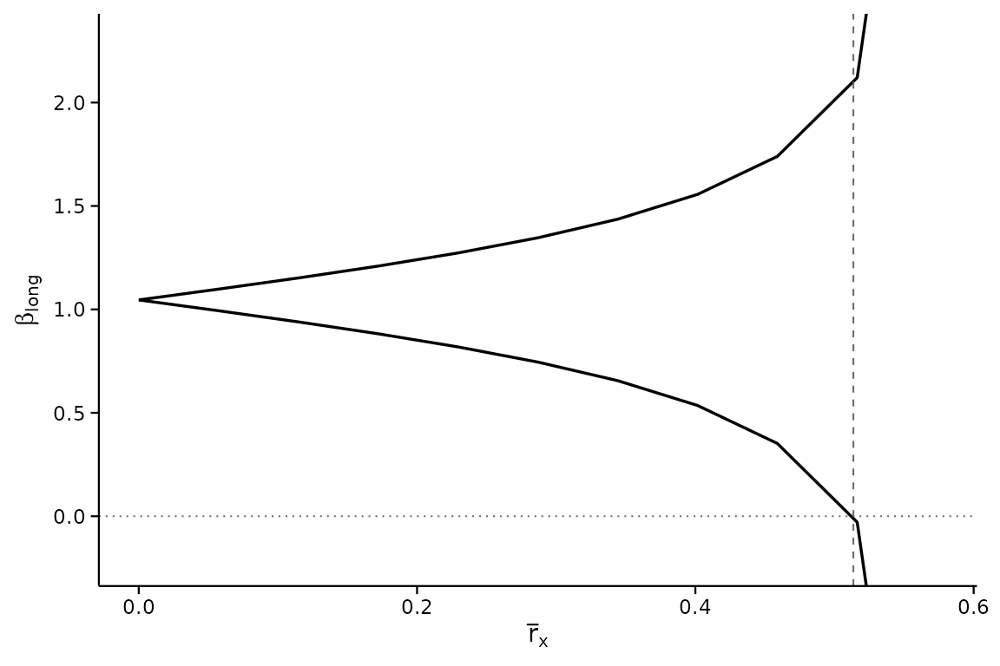
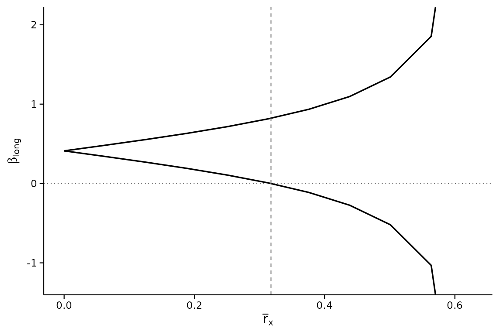
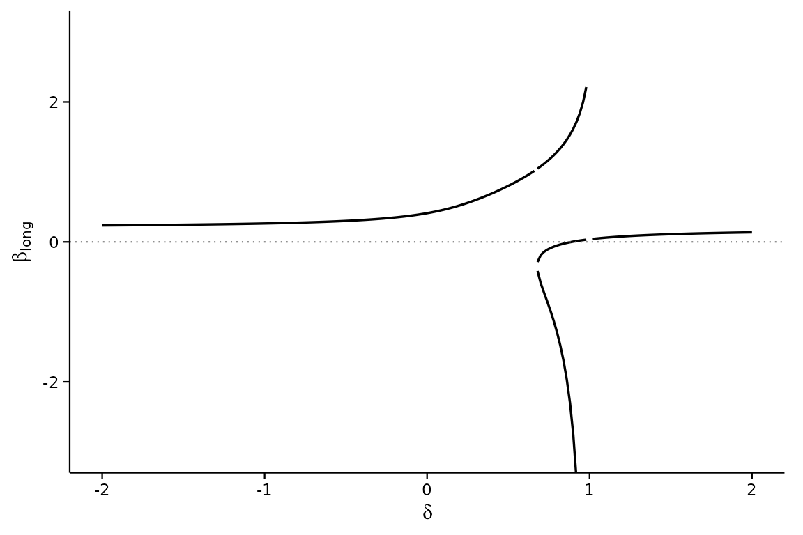

Reading the output: interpretation, edge cases and decisions
Source:vignettes/interpreting-results.Rmd
interpreting-results.RmdThe tour vignette shows how to call the package. This one is about what comes back: what each number means, what to conclude from it, what to write in the paper, and what the output looks like in the situations that confuse people – an unbounded set, a breakdown point of zero or infinity, a large Oster next to a small sign-change . It is written for the author who has to defend the analysis and for the referee who has to judge it.
Most examples use simulated data in which the omitted variable exists and is simply hidden from the analysis, so you can see the analysis get it right, and see what it looks like when a conclusion is genuinely fragile. One section uses the bundled BFG (2020) data for a real case.
# A world with six observed covariates w1..w6 and one omitted variable u.
# `beta` is the true effect of x; pi2 and g2 are u's effects on x and y.
make_world <- function(seed, beta, pi2, g2, pi1 = rep(0.6, 6), sy = 1,
n = 2000) {
set.seed(seed)
w <- matrix(rnorm(n * 6), n, 6, dimnames = list(NULL, paste0("w", 1:6)))
u <- 0.3 * w[, 1] + rnorm(n)
x <- w %*% pi1 + pi2 * u + rnorm(n)
y <- beta * x + w %*% rep(c(0.4, -0.3), 3) + g2 * u + rnorm(n) * sy
d <- data.frame(y = as.numeric(y), x = as.numeric(x), w)
d$u <- u # kept only so we can check the truth; never used
d
}
w1 <- paste0("w", 1:6)
form <- y ~ x + w1 + w2 + w3 + w4 + w5 + w6
truth <- function(d) unname(coef(lm(update(form, . ~ . + u), d))["x"])The numbers, and what each one means
| Where it appears | Name | What it is | How to read it |
|---|---|---|---|
header, $dgp$beta_med
|
the coefficient on from the regression you can run | the estimate under “no selection on unobservables” | |
header, $breakdown
|
breakdown point | the smallest at which the hypothesis (default: the sign of ) can fail | an unobservable would need to move at least this much, relative to the calibration covariates, to overturn the conclusion |
calibrate_rho() |
how much covariate moves relative to the other calibration covariates | a reference scale for : the breakdown point is judged against these | |
$results |
identified set | every consistent with the data and the sensitivity parameters | the range of effects you cannot rule out at that level of selection |
-Inf, +Inf in $results
|
unbounded set | the sensitivity parameters no longer restrict | beyond this
the data say nothing; see rmax below |
direction = "rybar" |
the largest effect of the unobservable on the conclusion survives, given its effect on | the breakdown frontier; Inf means no outcome
effect can overturn it at that
|
|
analysis = "oster" |
Oster’s relative-selection coefficient at which the hypothesis fails | is “as much selection on unobservables as on observables” | |
regsen_boot() |
confidence interval | sampling uncertainty in the breakdown point | the breakdown point is an estimate; report it with this |
Two facts about the DMP scale that make reading easier:
- means the omitted variable matters as much for the treatment as all the calibration covariates taken together. A breakdown point above 1 is therefore very robust; one near 0 is not.
- With
cbar = 1andrybar = Inf, the identified set becomes unbounded at exactly . The breakdown point can never exceed in that case, so the comparison “breakdown point versus ” is the informative one; do not read a breakdown point as robust just because it is a large fraction of .
The decision path
Having run regsen_bounds() and
calibrate_rho(), the question is whether the breakdown
point is large relative to what the observed covariates do.
DMP’s proposal, and the one we recommend, is:
| Breakdown point | Reading | What to write |
|---|---|---|
| above every | robust | “an unobservable would have to be more important for than any of the calibration covariates” |
| above most , below the largest | moderately robust | name the covariates it does not beat; argue whether an unobservable that important is plausible |
| below most | fragile | “an unobservable as important as [a minor covariate] would overturn the sign” |
| the hypothesis already fails at | the point estimate is on the wrong side; sensitivity analysis is not the question | |
Inf (only with finite rybar) |
robust to any selection on | “no amount of selection on the treatment overturns the conclusion once the unobservable’s effect on the outcome is capped at ” |
Then, in the paper, pair the breakdown point with (i) the it is compared to, (ii) its bootstrap interval, and (iii) the choice of calibration set. Those three are what a referee will ask about.
Case 1: a robust conclusion
The true effect is 1; the omitted variable is modest.
d <- make_world(11, beta = 1, pi2 = 0.2, g2 = 0.3, sy = 0.6)
res <- regsen_bounds(form, d, compare = w1, cbar = 1)
rho <- calibrate_rho(form, d, compare = w1)
res$breakdown
#> [1] 0.5135717
rho
#> variable rho
#> 1 w1 48.66144
#> 4 w4 46.23054
#> 5 w5 45.37811
#> 2 w2 43.34468
#> 6 w6 43.19672
#> 3 w3 39.38136The breakdown point is 0.514, and every is below it: an unobservable would have to move more than any single observed covariate does, relative to the others, before the sign of the effect came into doubt. (Recall the are printed as percentages; 49% means .) The identified set stays on one side of zero all the way there:
plot(res, xline = res$breakdown)
Whether that is “robust enough” is an argument, not a computation: the analysis says how important an omitted variable must be, and the author must say why one that important is implausible. Here we know the truth – the true is 0.985 – and the conclusion is right.
What to write. “The sign of the effect survives any omitted variable whose influence on the treatment, relative to the calibration covariates, is below . For comparison, the most important calibration covariate has (Table X); an unobservable would have to matter more for the treatment than any of them.”
Case 2: a fragile conclusion
Here the true effect is zero. The medium regression sees a positive coefficient only because the omitted variable pushes and the same way.
d <- make_world(12, beta = 0, pi2 = 0.8, g2 = 0.8)
res <- regsen_bounds(form, d, compare = w1, cbar = 1)
rho <- calibrate_rho(form, d, compare = w1)
c(beta_med = res$dgp$beta_med, breakdown = res$breakdown)
#> beta_med breakdown
#> 0.4110880 0.3176581
range(rho$rho) / 100
#> [1] 0.3762124 0.6526950The medium coefficient is 0.41 and the naive reading would call it a positive effect. But the breakdown point is 0.32, below every : an omitted variable less important for the treatment than the least important observed covariate would already be enough to overturn the sign. That is the analysis working as intended – the true effect is 0.02.
plot(res, xline = res$breakdown)
What to write. Do not write “the effect is robust to omitted variable bias.” Write what the number says: “the sign is overturned by an omitted variable with , less than the contribution of any single calibration covariate,” and let the reader weigh it. If the paper’s claim depends on this coefficient, the honest conclusion is that the data do not establish its sign.
Case 3: a breakdown point of zero
A breakdown point of exactly 0 is not a computation failure. It says the hypothesis is already false at , i.e. at itself.
d <- make_world(11, beta = 1, pi2 = 0.2, g2 = 0.3, sy = 0.6)
regsen_breakdown(form, d, compare = w1, beta = bnd_lb(2))$results
#> index breakdown
#> 1 1 0Testing
“”
when
gives 0: no sensitivity analysis is needed to reject a hypothesis the
point estimate already contradicts. The same happens with the default
sign hypothesis when the coefficient is on the “wrong” side. Check the
Hypothesis: line of the print and
res$dgp$beta_med before reading anything else.
Case 4: the set is unbounded early – a weak calibration set
DMP measure the omitted variable against the calibration covariates. If those covariates explain little of the treatment, the yardstick is short and the identified set blows up at a small .
d <- make_world(13, beta = 1, pi2 = 0.5, g2 = 0.5, pi1 = rep(0.08, 6))
res <- regsen_bounds(form, d, compare = w1, cbar = 1)
r2 <- res$dgp$covwx_norm_sq / res$dgp$var_x # R2 of X on W1
c(R2_x_on_w1 = r2, rmax = sqrt(1 - r2), breakdown = res$breakdown)
#> R2_x_on_w1 rmax breakdown
#> 0.05820871 0.97045932 0.95321387
calibrate_rho(form, d, compare = w1)
#> variable rho
#> 1 w1 118.233328
#> 3 w3 43.504387
#> 5 w5 37.841128
#> 4 w4 32.835219
#> 6 w6 25.683294
#> 2 w2 7.117709Two things to notice. is only 0.06, so and the breakdown point, 0.95, sits close to it. That looks impressive until you see the : they are all over the place, because when the covariates barely move their relative contributions are dominated by noise. A breakdown point of 0.95 against a covariate with is not robust.
What to do. This is the situation in which the
choice of calibration set matters most. Move the covariates that
genuinely predict the treatment into compare and leave
nuisance controls in
(see the next case). If nothing observed predicts the treatment, DMP’s
analysis has little to calibrate against, and the paper should say so
rather than report a breakdown point near
.
Case 5: which covariates go in compare
The bundled BFG (2020) data has ten geographic covariates and state fixed effects. DMP calibrate against geography and partial out the fixed effects, and the difference is not cosmetic:
data(bfg2020)
bfg2020$statea <- factor(bfg2020$statea)
geo <- c("log_area_2010", "lat", "lon", "temp_mean", "rain_mean",
"elev_mean", "d_coa", "d_riv", "d_lak", "ave_gyi")
bform <- reformulate(c("tye_tfe890_500kNI_100_l6", geo, "statea"),
response = "avgrep2000to2016")
bp_geo <- regsen_bounds(bform, bfg2020, compare = geo, cbar = 1)$breakdown
bp_all <- regsen_bounds(bform, bfg2020, cbar = 1)$breakdown # FE in W1 too
c(geography_only = bp_geo, geography_and_state_FE = bp_all)
#> geography_only geography_and_state_FE
#> 0.8035643 0.2909420With the fixed effects in the calibration set the breakdown point
falls to 0.29. Fixed effects soak up a great deal of the variation in
the treatment, so measuring an unobservable against “geography plus 48
state dummies” changes the meaning of
entirely – and the
of a single dummy is not a quantity anyone can reason about. The rule:
compare holds the covariates an omitted variable would
plausibly resemble; everything else is a control.
A related mistake is to compare breakdown points across specifications with different calibration sets. is relative to ; change and you have changed the unit.
Case 6: what cbar does, and when it matters
cbar caps how much of the omitted variable the
calibration covariates already explain – how endogenous the
controls are. The default cbar = 1 imposes nothing.
Lowering it can only shrink the identified set, but it binds only once
exceeds it:
d <- make_world(11, beta = 1, pi2 = 0.2, g2 = 0.3, sy = 0.6)
regsen_breakdown(form, d, compare = w1, cbar = c(0, 0.25, 0.5, 0.75, 1))$results
#> index breakdown
#> 1 0.00 0.5985359
#> 2 0.25 0.5354206
#> 3 0.50 0.5136354
#> 4 0.75 0.5135717
#> 5 1.00 0.5135717The breakdown point is the same for every cbar at or
above it. So if you report a breakdown point of, say, 0.5 under
cbar = 1, an assertion that the controls are exogenous
(cbar = 0) would raise it, but an assertion that they are
“not more than 80% endogenous” (cbar = 0.8) would not
change it at all. Report cbar = 1 unless you have an
argument for less, and if you do, show the sweep so the reader sees
whether it mattered.
clow is the other end of the same assumption: setting it
above zero asserts the controls are at least that endogenous,
which also narrows the set. Use it only when the paper’s own argument
implies it.
Case 7: bounding the effect on the outcome too
With rybar = Inf the omitted variable may matter
arbitrarily much for
.
Capping that with a finite rybar shrinks the set, and can
make the breakdown point infinite: no amount of selection on
the treatment overturns the sign once the outcome channel is capped
tightly enough.
d <- make_world(11, beta = 1, pi2 = 0.2, g2 = 0.3, sy = 0.6)
sapply(c(Inf, 2, 1, 0.5), function(ry) {
regsen_breakdown(form, d, compare = w1, cbar = 1, rybar = ry)$results$breakdown
})
#> [1] 0.5135717 0.5135895 0.5135895 InfRead Inf here as a statement about the frontier, not a
bug: at rybar = 0.5 the conclusion survives every
.
The other direction of the same frontier reports, for each
,
how large
may be:
fr <- regsen_breakdown(form, d, compare = w1, cbar = 1,
direction = "rybar", rxbar = c(0.25, 0.5, 1, 2))
fr$results
#> index breakdown
#> 1 0.25 Inf
#> 2 0.50 Inf
#> 3 1.00 0.5099323
#> 4 2.00 0.5099323What to write. The common-impact case
rybar_expr = function(r) r (the unobservable matters
equally for treatment and outcome) is the one-number summary DMP report
alongside the rybar = Inf breakdown point; report both. Say
explicitly which rybar a reported breakdown point assumes,
since a finite rybar is an extra assumption and a referee
will want it justified.
Case 8: Oster’s , and why a large one is not enough
Oster’s is the ratio of selection on unobservables to selection on observables, and the convention treats as implausible. Masten and Poirier (2026) show that the at which reaches zero and the at which its sign can flip are different numbers, and the second is often far smaller.
d <- make_world(12, beta = 0, pi2 = 0.8, g2 = 0.8)
d_eq <- regsen_breakdown(form, d, compare = w1, analysis = "oster",
r2long = 1, beta = bnd_eq(0))$results$breakdown
d_sign <- regsen_breakdown(form, d, compare = w1, analysis = "oster",
r2long = 1)$results$breakdown
c(delta_to_reach_zero = d_eq, delta_to_flip_sign = d_sign)
#> delta_to_reach_zero delta_to_flip_sign
#> 0.8897076 0.6775042Both are on the fragile world of Case 2. The sign breakdown is the
one that answers “could the conclusion be wrong?”, and it is the one to
report; regsen_breakdown() computes it by default. The two
coincide only when the identified set passes through zero as
grows, which is not guaranteed – the set can jump across zero as a
branch of Oster’s cubic diverges, which is exactly what happens near
:
o <- regsen_bounds(form, d, compare = w1, analysis = "oster",
delta = seq(-2, 2, 0.02), r2long = 1)
plot(o, ylim = c(-3, 3))
Two further conventions to state in the paper: the value of
r2long (Oster’s
;
1 is the conservative choice,
her rule of thumb), and whether maxovb was used to cap the
bias.
Case 9: the bootstrap interval
The breakdown point is a statistic. Its bootstrap interval is what makes the comparison with honest:
bb <- regsen_boot(bform, bfg2020, compare = geo, cbar = 1,
R = 199, cluster = "km_grid_cel_code", seed = 1,
show_progress = FALSE)
bb
#> Bootstrap confidence interval for the breakdown point
#> ------------------------------------------------------------
#> R : 199
#> Cluster bootstrap : km_grid_cel_code
#> Interval : BCa
#> Bias corr. (z0) : 1.1233
#> Acceleration : -0.0008
#> Confidence level : 95%
#> Point estimate : 0.8036
#> 95% CI : [0.7465, 0.9025]
#> (An endpoint is an extreme replicate; raise R)
#> 95% CI (percentile): [0.4997, 0.8612]Read the BCa interval as the default; the percentile one is printed
for comparison. Here the two differ a good deal: z0 is
large, meaning most cluster resamples gave a breakdown point below the
full-sample one, and BCa shifts the quantiles it reads to correct for
that. Three things the print can add:
-
“BCa unavailable; showing percentile” – the bias or
acceleration constant was undefined (every replicate on one side of the
estimate, or a degenerate jackknife). Raise
R, or report the percentile interval. -
“An endpoint is an extreme replicate; raise R” – the
adjusted quantile fell on the smallest or largest replicate. 199 is a
small
Rfor a paper; 999 or 1999 is usual. -
“Infinite replicates” – on some resamples the hypothesis
survived every value of the parameter (this arises with finite
rybar). They are counted as in the interval, so an upper endpoint ofInfis a result, not an error.
Cluster at the level the paper’s standard errors are clustered at. The jackknife behind BCa then runs over clusters rather than rows.
What to write. “The breakdown point is 0.80 (95% cluster-bootstrap BCa interval [, ], ).”
Case 10: several treatments at once
When the paper has several coefficients of interest,
regsen_multi() gives each its breakdown point in the
same specification, so they can be compared:
regsen_multi(bform, bfg2020,
treatments = c("tye_tfe890_500kNI_100_l6", "lat", "temp_mean"),
compare = geo, cbar = 1)
#>
#> Sensitivity across treatments
#> ------------------------------------------------------------
#> treatment estimate breakdown n
#> tye_tfe890_500kNI_100_l6 2.055 0.8036 2036
#> lat 2.265 0.03622 2036
#> temp_mean 1.627 0.02502 2036Each row promotes one variable to the treatment and keeps every other term as a control, so the rows are comparable. A row with a near-zero breakdown point is a coefficient whose sign the data do not establish.
Common mistakes
- Reading a breakdown point as a probability. It is a threshold on a relative magnitude, not a probability that the conclusion is wrong.
- Reporting the breakdown point without . On its own the number has no scale. Always table the next to it.
- Reporting it without an interval. See Case 9.
-
Putting fixed effects in
compare. See Case 5. - Comparing breakdown points across specifications with different calibration sets. The unit changes with .
- Reading a plateau in the plot as “the bound levels off.” Bounds that leave the panel are unbounded; the package draws them exiting the plot rather than flat along the edge for this reason.
- Mixing up the two Oster breakdown points. The one that reaches zero is not the one that flips the sign (Case 8).
-
Treating
rybaras free. A finiterybaris a substantive assumption about the outcome equation. State it.
A reporting checklist
For a sensitivity analysis a referee can evaluate, the paper needs:
- The specification: outcome, treatment, which covariates are in the calibration set and which are controls , and why.
- The breakdown point under the default (
cbar = 1,rybar = Inf) and under common impact (rybar = rxbar), with bootstrap intervals. - The calibration table:
for every
covariate (
calibrate_rho()), and optionally their pairwise partial (calibrate_partial_r2()). - One figure: the identified set against
with the breakdown point marked
(
plot(res, xline = res$breakdown)), or the frontier. - If Oster’s
is reported: the sign-change breakdown, the
r2longused, and whethermaxovbwas imposed. - A sentence saying what magnitude of omitted variable the conclusion is robust to, in words a reader can weigh against the setting.
regsen_table(res, notes = TRUE) writes the specification
note for a table; regsen_glance(res) collects the headline
numbers in one row.
References
- Diegert, P., Masten, M., and Poirier, A. (2026). Assessing Omitted Variable Bias when the Controls are Endogenous. arXiv:2206.02303.
- Oster, E. (2019). Unobservable Selection and Coefficient Stability: Theory and Evidence. JBES 37(2), 187–204.
- Masten, M., and Poirier, A. (2026). The Effect of Omitted Variables on the Sign of Regression Coefficients. AER 116(7), 2685–2710.